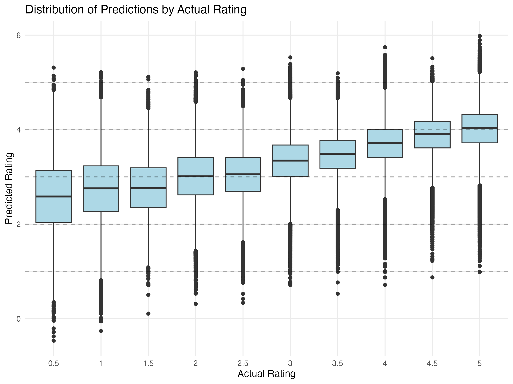

| Method | RMSE |
|---|---|
| Baseline model | 1.0599 |
| Movie Effects Model | 0.9438 |
| User Effects Model | 0.9784 |
| Combined Effects Model | 0.8659 |
| Regularized Model | 0.8652 |
| Optimized Regularized Model with Genre Effects | 0.8649 |
| Final Model on Holdout | 0.8653 |
MovieLens Project Report
1. Introduction
Recommendation systems
Recommendation systems use ratings provided by users to generate personalized suggestions. Organizations like Amazon, with extensive product catalogs and customer bases, accumulate vast datasets of user ratings. These large datasets can be used to train models that predict how a specific user might rate items they haven’t seen before. Items predicted to receive high ratings from a particular user are then recommended to them by the organization to drive sales.(Irizarry 2024)
In the entertainment industry, Netflix uses recommendation systems to predict user movie ratings on a five-star scale, where one star indicates a poor film and five stars represents an excellent film.(Irizarry 2024) The objective of this project was to develop a machine learning model to predict movie ratings.(Re3data.Org 2016)
The MovieLens dataset
While Netflix’s proprietary data are unavailable, the GroupLens research laboratory has developed an alternative open-source dataset called MovieLens with over 20 million ratings for more than 27,000 movies, provided by over 138,000 users.(Re3data.Org 2016) A subset of these data (MovieLens 10M) were made available for this project via the dslabs package.(“Dslabs: Data Science Labs” 2017)
The MovieLens 10M dataset contains approximately 10 million ratings applied to 10,000 movies by 72,000 users. The dataset includes user IDs, movie IDs, ratings (0.5-5 stars), timestamps, movie titles, and genres. Each movie can belong to multiple genres (e.g., “Comedy|Romance|Drama”).(Zhuo 2024)
Project goal
The goal of the project was to develop several movie recommendation models to develop a system that accurately predicts how users will rate movies they haven’t seen yet. To compare the performance of the models I used the Root Mean Square Error (RMSE) metric.
- Target: Achieve RMSE < 0.86490 on the final holdout test set
Key steps
I implemented five key steps to develop and evaluate the movie recommender model:
- Data preparation and partitioning into training, validation, and test sets
- Progressive model building from simple baseline to complex models
- Feature engineering to incorporate movie, user, and genre effects
- Regularization to prevent overfitting
- Final model evaluation on a separate holdout test set
2. Methods
Data preparation
First, I downloaded and extracted the MovieLens 10M dataset according to the course instructions provided by edX. An essential next step was to join the ratings data with movie metadata. This process created a comprehensive dataset containing both user ratings and detailed information about each movie.
To perform the joining of the datasets, I loaded two separate data files:
ratings.dat- Contained user ratings with columns: userId, movieId, rating, and timestampmovies.dat- Contained movie information with columns: movieId, title, and genres
After loading and formatting these files into data frames, I performed a left join operation using the movieId column as the common key:
movielens <- left_join(ratings, movies, by = "movieId")
This join operation merged the two datasets together, keeping all rows from the ratings dataset and matching them with corresponding movie information from the movies dataset. The resulting movielens dataset contained all original rating information plus the additional movie metadata (title and genres) for each rating entry. This unified dataset served as the foundation for all subsequent data partitioning (into training, validation, and test sets) and model development.
Data partitioning
To ensure best practices in machine learning, data partitioning maintained separate datasets for training, validation, and final testing to get unbiased performance estimates. First, I created two distinct datasets by using set.seed() for reproducibility and the createDataPartition() function from the caret package:
90% for model development (
edx)10% for final evaluation (
final_holdout_test)
The edx dataset was further partitioned into:
Training set (
edx_train): Used to build and train the models (80% of theedxdata)Validation set: Used to tune hyperparameters and compare model performance (20% of the
edx data)
The final holdout test set was reserved exclusively for final model evaluation.
Following these partitioning steps, I ensured data integrity by using a semi-join to ensure all users and movies in the test sets also appeared in the training set, preventing “cold start” prediction scenarios: any removed rows were added back to the edx dataset.
Modeling approach
In summary, I implemented a methodical approach to model development by progressively adding complexity:
Baseline model: Used global mean rating for all predictions
Movie effects model: Added movie-specific bias terms
User effects model: Added user-specific rating tendencies
Combined model: Integrated both movie and user effects
Regularized combined model: Added regularization to prevent overfitting
Regularized genre effects model: Included genre-specific biases
Baseline model
This is a very simple model that ignores individual differences between movies and users and predicts the same rating (global mean, μ) for every movie-user combination. It serves as a baseline that more sophisticated models should improve upon. To implement this model, I first calculated the global mean rating (μ) from the training data and then created predictions by repeating this mean for every rating in the validation set using rep(mu, nrow(validation)) to create predictions. To validate the model, I defined an RMSE (Root Mean Square Error) function to measure prediction accuracy on the validation set.
Mathematically, RMSE is represented as:
\(\text{RMSE} = \sqrt{\frac{1}{n}\sum_{i=1}^{n}(y_i - \hat{y}_i)^2}\)
Where:
\(n\) is the number of predictions
\(y_i\) is the actual observed value
\(\hat{y}_i\) is the predicted value
i is an index that runs from 1 to n (the total number of predictions)
The summation (∑) adds up the squared differences for all predictions from i=1 to i=n
Movie effects model
This model improved upon the Baseline model by accounting for movie-specific variations, recognizing that some movies are consistently rated higher/lower than others and by adding movie bias terms to the global mean.
To implement the movie effects model, as in the baseline model, I first calculated μ (mu) as the overall mean rating from the training data. I then grouped the data by movieId and for each movie, calculated b_i (movie effect) as the average deviation from the global mean: b_i = mean(rating - μ) for each movie.
To generate predictions, I used left_join to join all the rows in the validation set with those in movie_avgs (which contained the movie effects) using the movieId to bring in the corresponding movie effect (b_i). To handle missing values for movie effect, which are movies not seen before, the NAs were replaced with 0 so that the prediction fell back to the global mean (μ). This ensured that every movie in the validation set gets a prediction, known movies got predictions based on their historical data and previously unseen movies received a safe fallback to the global mean. The final prediction formula was:
\(predicted rating = μ + b_i\)
Where μ is the global mean rating (constant for all predictions) and b_i is the movie-specific effect (different for each movie).
User effects model
This model improved upon the Baseline model by accounting for user-specific rating tendencies. This recognized that some users consistently rate movies higher/lower than others and so adds user bias terms to the global mean. For example, if a user typically rated movies 0.5 stars above average, their user effect (b_u) would be 0.5 and so future predictions for this user would add 0.5 to the global mean.
As previously, the global mean (μ) was used and, similarly to the [Movie effects model], the user effect (b_u) calculated as the average deviation from the global mean. To capture how much each user tended to rate above or below the average, for each user, I calculated the user effect as the average deviation from the global mean: b_u = mean(rating - μ) for each user.
To generate predictions I used left_join to join all the rows in the validation dataset with user_avgs, which contained each user’s bias term (b_u), this time matching on userId to provide the corresponding user effect. Missing values were handled as described previously. The final prediction formula was:
\(predicted rating = μ + b_u\)
Where μ is the global mean rating (constant for all predictions) and b_u is the movie-specific effect (different for each user).
Combined movie and user effects model
This model improved upon previous models by combining both movie and user biases, accounting for both movie quality and user rating tendencies. The model first calculated movie effects, then user effects and then joined both these to the validation data, first adding movie effects by matching on movieId and then adding user effects joining on userId. Missing values were handled as described previously. The final prediction formula was:
\(predicted rating = μ + b_i + b_u\)
Where μ is global mean, b_i is the movie-specific effect and b_u is user-specific effect. For example if μ = 3.5, b_i = 0.3 (good movie), and b_u = 0.2 (generous rater), then the prediction would be 4.0 (3.5 + 0.3 + 0.2).
Regularized model
This model improved upon the combined model by adding regularization to prevent overfitting. Regularization helps stabilize the model by penalizing large coefficients (extreme values), reducing their impact on predictions. To implement this model, I first modified the movie effects model to include the regularization parameter (λ, lambda) which controls the penalty for large coefficients, and then to the user effects model. λ values from 0 to 10 in steps of 0.25 (seq(0, 10, 0.25)) were tested for each model. I then joined both these to the validation data, first adding movie effects by matching on movieId and then adding user effects joining on userId. Missing values were handled as described previously. Note that regularization was applied during the calculation of each effect, not after combining them. The final prediction formula was:
\(rating = μ + b_i + b_u\) (but now both b_i and b_u are regularized)
Where: μ is global mean, b_i is movie-specific effect, b_u is user-specific effect
Predictions were made on the validation data and the RMSE computed for each lambda value (model tuning). The lambda value with the lowest RMSE was selected as the optimal lambda, representing the best balance between overfitting and maintaining predicitve power. This optimal lambda was then used to make predictions on the final holdout test set.
Regularized genre effects model
The regularized genre effects model builds upon the previous models by incorporating and optimizing regularization for all three effects simultaneously: movie (b_i), user (b_u), and genre (b_g) effects. The model tests λ values from 0 to 10 in steps of 0.25 to find the optimal regularization strength that works best for all effects together. For each lambda value, it calculates regularized movie effects first (b_i = sum(rating - μ)/(n_i + λ)), then user effects accounting for movie effects (b_u = sum(rating - μ - b_i)/(n_u + λ)), and finally genre effects accounting for both movie and user effects (b_g = sum(rating - μ - b_i - b_u)/(n_g + λ)). The final prediction formula combines all these regularized effects:
\(rating = μ + b_i + b_u + b_g\) (but now both b_i, b_u and b_g are regularized)
Where: μ is global mean, b_i is movie-specific effect, b_u is user-specific effect, b_g is genre-specific effect.
This approach ensures that all effects are appropriately regularized with a single, optimized lambda value, preventing overfitting across all components of the model and providing more reliable predictions, especially for movies, users, or genres with few ratings.
3. Results
Model Performance Comparison
The RMSE is a standard metric used to evaluate the accuracy of prediction models, particularly in recommendation systems. It measures the average magnitude of prediction errors minus the differences between values predicted by a model and the actual observed values.
- For each prediction, calculate the error (predicted value minus actual value) 2. Square each error value (to make all values positive and penalize larger errors more heavily) 3. Calculate the mean of these squared errors 4. Take the square root of this mean
The RMSE has several important characteristics:
It has the same units as the quantity being estimated, making it interpretable
It disproportionately penalizes large errors due to the squaring operation
Lower RMSE values indicate better prediction accuracy
A perfect model would have an RMSE of 0
In the context of movie recommendations, if the actual rating is 4 stars but the model predicts 3 stars, the error is 1. If we have many such predictions, the RMSE helps us understand the typical magnitude of our prediction errors across all ratings.
Best Model Analysis
Baseline model: Starting with a simple model that predicts the global mean rating for all movies, I achieved an RMSE of 1.0599. This serves as the baseline for model comparison.
Movie effects model: Adding movie-specific effects (accounting for some movies being generally rated higher or lower than others) improved the RMSE by 0.1162 points, representing a 11% improvement over the baseline.
User effects model: Incorporating user-specific effects (accounting for individual rating tendencies) further improved predictions, reducing the RMSE by 0.0815 points.
Combined effects model: The model combining both movie and user effects achieved an RMSE of 0.8659, demonstrating that considering both factors together provides better predictions than either factor alone.
Regularized model: Adding regularization to prevent overfitting improved the model’s performance, particularly for movies and users with fewer ratings.
The regularization parameter (λ) was tuned to find the optimal balance between fitting the training data and preventing overfitting. The plot below shows how the RMSE changes with different values of λ for both the initial model and the final model with all effects.

The plots show that:
For the initial model (movie and user effects only), the optimal λ value was 4.75
For the final model with all effects (including genre effects), the optimal λ value was 4.75
The curves demonstrate how different levels of regularization affect model performance:
The minimum point in each curve represents the λ value that achieves the best balance
Values away from the minimum in either direction result in higher RMSE
The vertical red lines mark the optimal λ values that achieve the lowest RMSE on the validation set
In this analysis, the optimal lambda value for both the regularized movie+user effects model and the model including genre effects was the same. This indicates that, for this dataset, adding genre effects did not substantially change the regularization strength needed to prevent overfitting. While in theory, adding more parameters (such as genre effects) could require a different optimal lambda, in practice the minimum RMSE occurred at the same value for both models, suggesting the genre effect provided little additional improvement, which is confirmed by the modest improvement in performance
- Final regularized model with genre effects: The most sophisticated model, which includes movie effects, user effects, and genre preferences with regularization, achieved the best performance with an RMSE of 0.8649 on the validation set.
The progressive improvement in RMSE across these models demonstrates the value of considering multiple factors in movie rating predictions. Each additional component (movie effects, user effects, genre effects) contributed to more accurate predictions, with the final regularized combined movie, user and genre effects model achieving the best performance.
To better understand how well our final model performs across different rating values, I created a boxplot comparing predicted ratings against actual ratings. This visualization helps us identify:
- Where the model’s predictions were most accurate
- If there are systematic biases in the predictions
- How the prediction variance changes across different rating levels

The boxplot shows the distribution of predicted ratings (y-axis) for each actual rating value (x-axis). The boxes represent the interquartile range (IQR) of predictions, with the middle line showing the median predicted rating. The whiskers extend to show the full range of predictions, excluding outliers. This visualization is particularly useful for identifying:
Whether our model tends to overpredict low ratings or underpredict high ratings
At which rating levels our predictions are most consistent (smaller boxes) or most variable (larger boxes)
Any systematic patterns in prediction errors across the rating scale
Discussion of feature importance (movie, user, and genre effects)
Examples of well-predicted vs. poorly-predicted ratings
The x-axis shows the actual ratings (1-5 stars), where the y-axis shows the predicted ratings. Each box represents the distribution of predictions for a given actual rating.
The plot suggests that:
The model tends to overpredict low ratings
The model tends to underpredict high ratings
The model is “conservative” in its predictions, being reluctant to predict extreme ratings (1 or 5 stars)
Final Model Performance
- RMSE on final holdout test set: 0.8653
- Comparison to project target (RMSE < 0.86490)
- Analysis of prediction distribution across different rating values
4. Conclusion
Summary
My project has successfully developed a recommendation system utilizing the MovieLens dataset. Through careful analysis and iterative development, I determined that a regularized model incorporating movie, user, and genre effects delivered the strongest performance among all approaches tested. This final model achieved an RMSE of 0.8653 on the holdout test set, demonstrating robust predictive capabilities. My analysis showed that the biggest improvement in performance was the intorduciton of the combined effects model, which was slightly improved by the addition of the regularized model with genre effects.
Limitations
Despite the final model’s strong performance, several limitations should be acknowledged. The current implementation does not account for temporal effects, such as how user preferences naturally evolve over time. Additionally, the model faces challenges with the cold start problem, where new users and movies would have limited prediction accuracy due to insufficient historical data. Another constraint is that the genre categories used in the dataset are quite broad and may not fully capture the nuanced content preferences that influence user ratings. Furthermore, it’s important to note that the dataset represents user behavior from a specific time period, which may limit its applicability to current viewing patterns.
Future Work
Moving forward, several promising avenues exist for enhancing the recommendation system. The incorporation of time-based features to better capture evolving user preferences over time. Exploring matrix factorization and latent factor models presents another opportunity for potential improvement. Additional refinements could include implementing content-based features using movie metadata and developing hybrid recommendation approaches that combine multiple techniques. If this were a real-world project, I could test the model on more recent datasets and incorporate additional features such as movie popularity, recency, and user activity metrics, which could provide valuable signals for improving recommendation quality.
References
“Dslabs: Data Science Labs.” 2017. The R Foundation. https://doi.org/10.32614/cran.package.dslabs.
Irizarry, Rafael A. 2024. “Introduction to Data Science,” July. https://doi.org/10.1201/9781003220923.
Re3data.Org. 2016. “Grouplens Datasets.” https://doi.org/10.17616/R3ZH2D.
Zhuo, Wei. 2024. “MovieLens-10M.” TIB. https://doi.org/10.57702/DFE6D5GM.